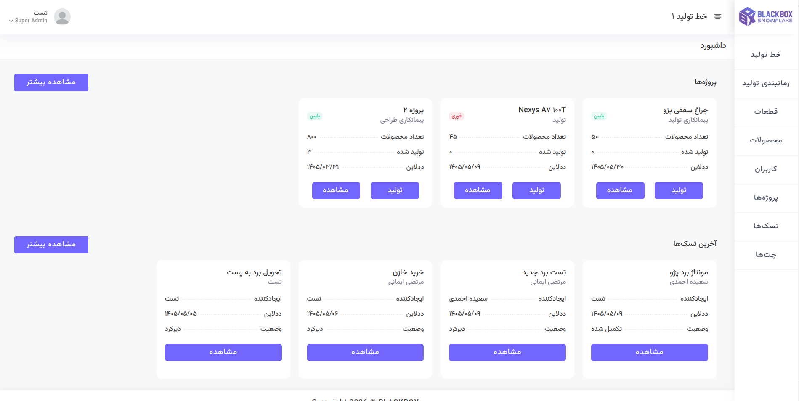
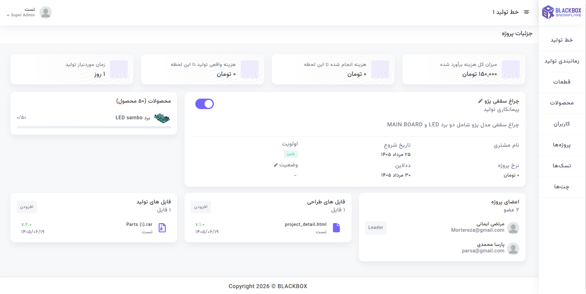
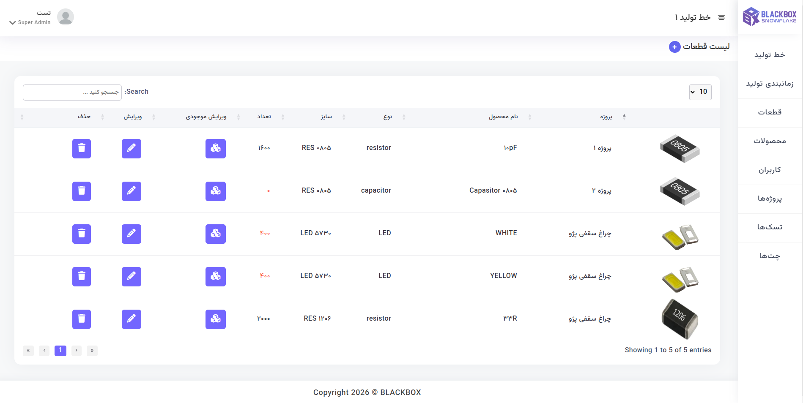

سامانه مدیریت تولید و مونتاژ برد
سامانهای برای مدیریت فرآیند تولید و مونتاژ بردهای الکترونیکی که امکان مدیریت قطعات، موجودی، تعریف محصولات، برنامهریزی تولید و کنترل امکان ساخت بر اساس قطعات موجود را فراهم میکند. همچنین مدیریت پروژه، تخصیص وظایف و ارتباط اعضای تیم در بستر سامانه انجام میشود.
مدیریت یکپارچه قطعات، محصولات و فرآیند تولید
این پروژه یک سامانه ERP برای مدیریت فرآیند تولید و مونتاژ بردهای الکترونیکی است که بخشهای مختلف چرخه تولید، از مدیریت قطعات و موجودی تا ساخت محصول و برنامهریزی تولید را در یک سیستم یکپارچه مدیریت میکند.
در سامانه ابتدا قطعات و موجودی آنها ثبت و مدیریت میشوند و سپس محصولات بر اساس قطعات موردنیاز تعریف میشوند. ساختار محصول مشخص میکند برای تولید هر محصول چه قطعاتی و با چه میزان موجودی موردنیاز است.
هنگام ثبت فرآیند تولید، سیستم موجودی قطعات موردنیاز را بررسی کرده و بر اساس منابع موجود، امکان ساخت محصول را مشخص میکند. همچنین زمان موردنیاز برای تولید در فرآیند برنامهریزی تولید در نظر گرفته میشود.
در کنار بخش تولید، امکانات مدیریت پروژه نیز در سامانه پیادهسازی شده است. هر پروژه میتواند شامل وظایف مختلفی باشد که به افراد اختصاص داده میشوند و اعضای پروژه نیز امکان ارتباط و گفتگو در فضای اختصاصی همان پروژه را دارند.
قابلیتهای اصلی سیستم
مدیریت قطعات و موجودی
ثبت و مدیریت قطعات موردنیاز تولید و کنترل موجودی آنها در فرآیند ساخت.
تعریف محصولات
تعریف محصولات بر اساس قطعات موردنیاز و مشخص کردن ساختار مورد استفاده در تولید.
کنترل امکان تولید
بررسی موجودی قطعات موردنیاز و تعیین امکان ساخت محصول پیش از شروع فرآیند تولید.
برنامهریزی تولید
برنامهریزی فرآیند تولید بر اساس موجودی قطعات و زمان موردنیاز برای ساخت محصول.
مدیریت پروژه و وظایف
ایجاد پروژه، تعریف وظایف و اختصاص Task به افراد برای مدیریت فعالیتهای تیم.
ارتباط و همکاری تیمی
ایجاد فضای گفتوگو برای هر پروژه و امکان ارتباط اعضای تیم در جریان فعالیتهای پروژه.
جریان اجرای فرآیند تولید
قطعات موردنیاز در سیستم ثبت شده و موجودی آنها برای استفاده در فرآیند تولید مدیریت میشود.
محصول جدید بر اساس قطعات موردنیاز تعریف شده و ساختار مورد استفاده برای تولید آن مشخص میشود.
سیستم موجودی قطعات موردنیاز را بررسی کرده و امکان تولید محصول بر اساس منابع موجود مشخص میشود.
فرآیند تولید بر اساس موجودی قطعات و زمان موردنیاز برنامهریزی شده و برای اجرا آماده میشود.
وظایف مرتبط با پروژه به افراد اختصاص داده شده و اعضای تیم میتوانند فعالیتها و ارتباطات پروژه را مدیریت کنند.
تکنولوژی و ساختار فنی
سامانه با Django و Django Templates توسعه داده شده و منطق اصلی سیستم برای مدیریت قطعات، موجودی، محصولات و فرآیند تولید در سمت Backend پیادهسازی شده است.
رابط کاربری و بخشهای تعاملی سامانه با استفاده از Bootstrap، HTML، CSS و JavaScript توسعه داده شده و ارتباط میان بخشهای مختلف سیستم بر اساس ساختار یکپارچه Django انجام میشود.
نمایی از بخشهای پروژه
بخشی از رابط کاربری و پنلهای مدیریتی سامانه.


